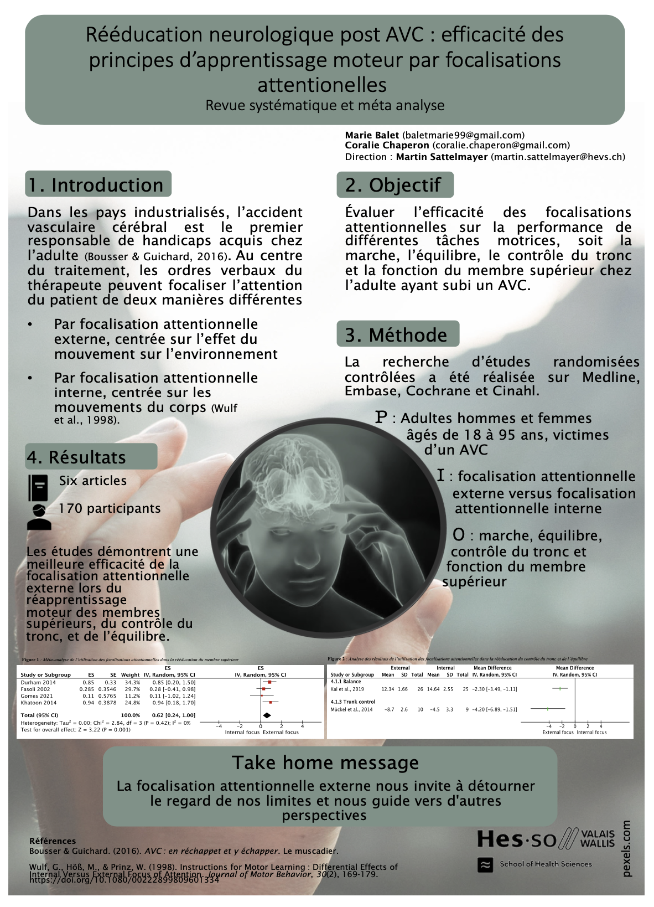

Focus of attention in stroke rehabilitation
Introduction
Motor learning is an integral part of stroke rehabilitation and requires verbal instructions from the therapist. These commands can focus the patient’s attention on the body segment to be mobilized or on the consequence of this movement on the environment. Differernt instructions can influence the motor performances.
The aim of this systematic review was to evaluate the effectiveness of attentional foci on the performance of various motor tasks, including walking, balance, trunk control, and upper limb function in adults with stroke.
Method
The search for articles was carried out on four databases. Articles were selected according to pre-spcified selection criteria. Demographic, methodological and statistical data were extracted. Risks of bias was analysed using the PEDro scale.
Results
Six articles including 170 participants were included. Study results are statistically significant in favor of external attentional focus during motor learning of the upper limbs, trunk control and balance.
Conclusion
An external attentional focus of attention in stroke neurological rehabilitation is more effective than an internal focus. Further research is needed due to the small number of studies and the small sample sizes. They will allow a concrete and definitive conclusion to be reached.
Keyword Stroke, motor learning, attentional focus, trunk, arm, balance, walking
A poster for this review is presented in Figure 1

Instructions used
Six studies were included into the systematic review (Mückel and Mehrholz 2014; Khatoon, Hamdani, and Noohu 2014; Gomes et al. 2021; Kal et al. 2019; Fasoli et al. 2002; Durham et al. 2014). Within the following table we present the tasks and instructions provided for the studies with open access. For studies behind the paywalls, please check the the journal home page.
References
Durham, K. F., C. M. Sackley, C. C. Wright, A. M. Wing, M. G. Edwards, and P. Van Vliet. 2014. “Attentional Focus of Feedback for Improving Performance of Reach-to-Grasp After Stroke: A Randomised Crossover Study.” Physiotherapy 100 (2): 108115.
Fasoli, Susan E., Catherine A. Trombly, Linda Tickle-Degnen, and Mieke H. Verfaellie. 2002. “Effect of Instructions on Functional Reach in Persons with and Without Cerebrovascular Accident.” The American Journal of Occupational Therapy 56 (4): 380390.
Gomes, Camila L. A., Roberta O. Cacho, Viviane T. B. Nobrega, Fabio Galvão, Denise S. de Araújo, Ana Loyse de S. Medeiros, Emanoelle C. V. Silva, Rodrigo L. Barreto, Enio W. A. Cacho, and Research Group on Human Motricity, Physiology MOFISH. 2021. “Effects of attentional focus on upper extremity motor performance in post stroke patients: A randomized pilot study.” Medicine 100 (9): e24656. https://doi.org/10.1097/MD.0000000000024656.
Kal, Elmar, Han Houdijk, John van der Kamp, Manon Verhoef, Rens Prosée, Erny Groet, Marinus Winters, Coen van Bennekom, and Erik Scherder. 2019. “Are the effects of internal focus instructions different from external focus instructions given during balance training in stroke patients? A double-blind randomized controlled trial.” Clinical Rehabilitation 33 (2): 207–21. https://doi.org/10.1177/0269215518795243.
Khatoon, Imrana, Nusrat Hamdani, and Majumi Noohu. 2014. “A Comparative Study on the Effect of Types of Focus of Attention on Upper Limb Function Training in Subjects with Stroke.” Journal of Physical Medicine & Rehabilitation Sciences/Fiziksel Tup Ve Rehabilitasyon Bilimleri Dergisi 17 (3).
Mückel, Simone, and Jan Mehrholz. 2014. “Immediate effects of two attention strategies on trunk control on patients after stroke. A randomized controlled pilot trial.” Clinical Rehabilitation 28 (7): 632–36. https://doi.org/https://nbn-resolving.org/urn:nbn:de:bsz:14-qucosa2-354726.